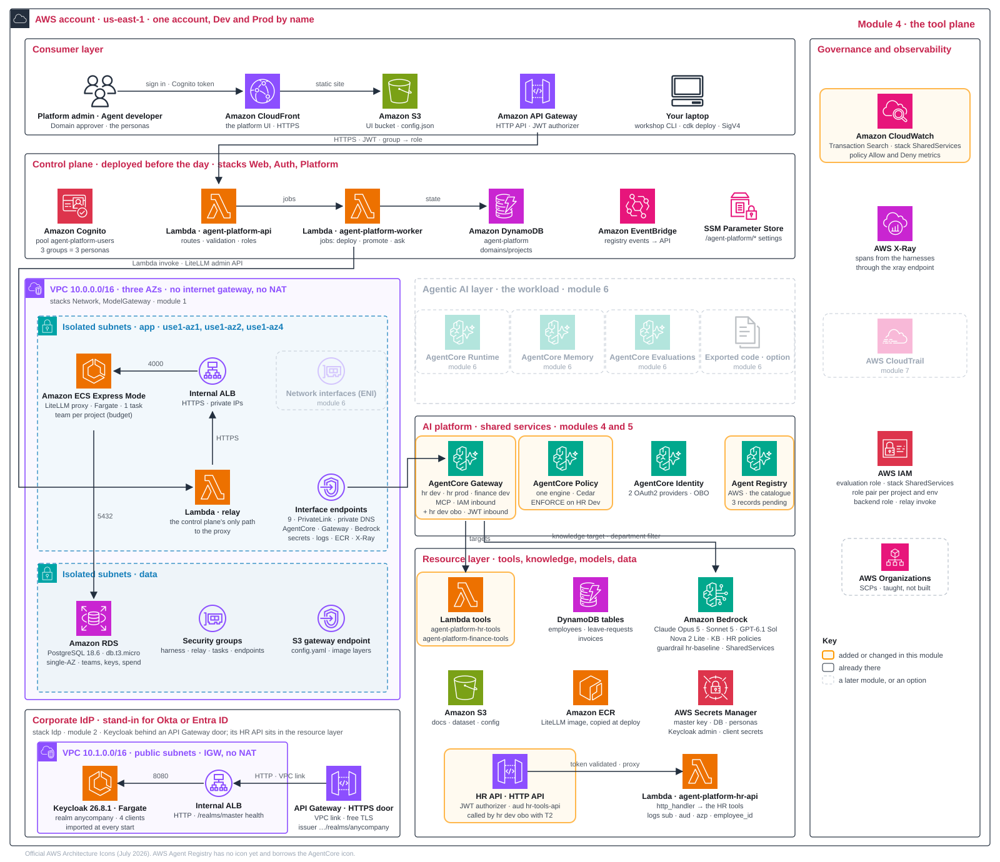

One door for every tool Explain · 10 min
AgentCore Gateway exposes tools through MCP, a common agent-to-tool interface. It provides three controls:
- Caller: who may reach the gateway.
- Operation: which tool and arguments are allowed.
- Evidence: what happened on each call.
workshop call probes assume the agent roles; running agents arrive in module 6. Target names prefix tools, for example hrtools___get_leave_balance.The door that knows who asked
Everything above describes the gateway the Dev and Prod agents use, where the caller is an IAM role. Module 2 ended with a question that gateway cannot answer: how does a tool learn which employee is asking? This module builds the answer as a second door beside the first. The gateway hr-assistant-dev-gw-obo is the on-behalf-of twin of HR Dev. Its inbound authorizer is CUSTOM_JWT rather than IAM: it fetches the signing keys from the realm's discovery URL and admits a token only if the signature is valid and the audience is hr-obo-gateway, which is exactly the token T1 that module 2 minted by hand. Behind it sits one target, hrapi, and that target is where the second exchange happens. hrapi is an OpenAPI target: the HR API, described by an OpenAPI document generated from the same schema as the Lambda tools. Its outbound credentials are OAuth with the grant type TOKEN_EXCHANGE through the provider kc-hr-obo-gateway. Before every call to the HR API, the gateway asks AgentCore Identity to exchange the caller's token for one addressed to hr-tools-api, and it sends that token, T2, in the Authorization header. The new gateway runs under the same execution role as HR Dev, agent-platform-proj-hr-assistant-dev-gateway; no new role is stamped, and the name hr-assistant-dev-gw-obo was chosen to fall inside the hr-assistant-dev-gw* pattern the role templates already use. The gateway needs none of that role's existing permissions, since its only target is neither a Lambda function nor a knowledge base. What it does need arrives as one inline policy, obo-token-exchange: the gateway may fetch its own workload token, read the client secret that the provider kc-hr-obo-gateway keeps in Secrets Manager, and ask AgentCore Identity for the exchange through that provider, and nothing else. The line agent-platform-proj-hr-assistant-dev-gateway: inline policy obo-token-exchange (gateway -> kc-hr-obo-gateway) in the output of workshop apply 4 is that policy being written; it is printed just before the gateway's own line.
Why not simply hand the Lambda target the token? Because a Lambda target cannot carry it. The gateway invokes a Lambda function under its own IAM role, the way it does for hrtools, and the function receives the tool arguments and nothing about the caller. Only OpenAPI and MCP server targets have an outbound OAuth configuration, and that is why the HR API exists at all: an API Gateway HTTP API with the route POST /tools/{tool}, a JWT authorizer whose issuer is the realm and whose audience is hr-tools-api, and behind it the same HR tool code. API Gateway validates the signature, the issuer, the audience and the expiry before the Lambda runs. A small adapter, scenario/tools/hr/http_handler.py, unwraps the HTTP call, writes one log line with the claims it received (sub, employee_id, aud, azp) and calls the unchanged handler. That log line is the evidence of the whole chain, and the hands-on reads it back.
One more thing changes at this door, and it matters for the policy engine. When a caller arrives with an IAM role, Cedar sees the principal AgentCore::IamEntity, the role. When a caller arrives with a token, Cedar sees AgentCore::OAuthUser, the sub of the token, which is the person. A rule on this gateway could therefore compare the token's employee_id with the employee_id argument the agent passes and forbid the call when they differ. The workshop stops short of that: the on-behalf-of gateway is not attached to the policy engine, and the HR tool still reads the argument, because the demonstration proves the identity chain and not row-level security. Decision 4.5 discusses both.
| hr-assistant-dev-gw | hr-assistant-dev-gw-obo | |
|---|---|---|
| Who may call | the Dev agent role, with a SigV4 signature | a token from the realm anycompany with the audience hr-obo-gateway |
| Execution role | agent-platform-proj-hr-assistant-dev-gateway | the same role, plus the inline policy obo-token-exchange |
| Cedar would see | AgentCore::IamEntity, the role | AgentCore::OAuthUser, the person's sub |
| Targets | hrtools (Lambda), hrkb (knowledge base, published as the tool hrkb___Retrieve) | hrapi (OpenAPI: the HR API behind API Gateway) |
| What the tool receives | the arguments, under the gateway's role | the arguments and a token for hr-tools-api: sub, employee_id, aud, azp |
| Policy engine | attached; LOG_ONLY, then ENFORCE | not attached: the demonstration proves identity, not row-level security |
Five decisions Design · 10 min
4.1Gateway layout: how many gateways, and whose?
| Option | Pros | Cons | Choose when |
|---|---|---|---|
| A · One platform gateway | one catalogue; fewest objects | one mistake affects everyone; name collisions; no IAM boundary per project | one team |
| B · One gateway per project and environment | an IAM boundary per project and environment; Dev never touches Prod tools | more objects; a naming convention to keep | many projects, Dev and Prod apart |
| C · A platform gateway for shared tools, plus domain gateways | shared enterprise tools once; domain tools apart | two places to govern; agents call two doors; something must pick the right door per project | shared enterprise systems plus domain tools |
| D · One gateway per domain | matches the organisation | Dev and Prod traffic mixed | domains own their tools and have one environment |
This workshop. Layout B creates three gateways:
- HR Dev and HR Prod: separate environment access.
- Finance Dev: the caller used to test isolation.
Each agent signs with IAM. All three gateways share one policy engine. Gateway ownership and target-account placement are separate decisions. A fourth gateway, hr-assistant-dev-gw-obo, stands beside HR Dev for callers with a token from the corporate IdP (4.5); it does not change the layout question.
Production path. Add a gateway for shared tools, then domain gateways. Keep project gateways for private tools. All still share the account's quotas.
Quotas apply at two levels (limits at writing):
- Gateway: 100 targets; 200 tool calls or lists per second.
- Account: the same 200-per-second ceiling across gateways. Four gateways, the three of layout B and the on-behalf-of twin, do not make it 800; a 250-per-second forecast needs a quota increase.
4.2Single layer or multi-layer: tools only, or agents behind gateways too?
| Option | Pros | Cons | Choose when |
|---|---|---|---|
| Single layer: only tools behind a gateway | one hop; one identity; one policy check; easy to trace | no reuse of specialist agents across teams | one agent per use case |
| Multi-layer: agents exposed as gateway targets; they call their own gateways | specialists reused; each keeps its own tools and limits | identity and policy at every hop; latency per hop; loops; harder to debug and to bill | shared specialist agents; teams of agents |
This workshop. One layer: HR assistant → gateway → tools and knowledge base. One hop and one service identity keep tracing simple.
AgentCore Runtime agents can also become gateway targets, so adding specialist agents later does not require a new platform.
Production path. A supervisor calls specialists, each with its own gateway. Carry identity and apply policy at every hop.
4.3How do tools and knowledge get in, and how is access bounded?
| Option | Pros | Cons | Choose when |
|---|---|---|---|
| Lambda targets with an inline schema | full control; cheap | you write the adapter | internal data and systems |
| OpenAPI or MCP-server targets with OAuth outbound | reuse existing APIs and SaaS | credentials and on-behalf-of to design | SaaS and partner APIs, such as an HR system |
| Connectors, such as a managed knowledge base | no code; a filter pinned at the target | the connector's feature set | retrieval over documents |
This workshop. Data access has two controls:
- Project allow-list: admin selects tools and knowledge; the gateway role is scoped to that list.
- Knowledge filter:
department = HRis pinned at the target. A prompt or caller argument cannot change it.
Remaining gap: Lambda tools trust the supplied employee_id. Decision 4.5 closes half of it: on the on-behalf-of gateway the HR API knows who asked, from a token it can verify. The other half is row-level security, the production step: the handler reads employee_id from the token, or a Cedar rule compares the token's employee_id with the argument. Caller arguments alone do not authorise data access.
Production path. Add OAuth for OpenAPI/MCP SaaS tools, retrieval scoped to user permissions and VPC Lattice private endpoints for VPC targets.
Reference · Five target connectivity patterns
| Target location | Connection | Constraint |
|---|---|---|
| Private MCP server or REST API | VPC Lattice target endpoint: gateway-managed in the same account; self-managed with a RAM-shared resource configuration across accounts | IAM or JWT inbound; private CA can be registered |
| Private API Gateway REST API | OpenAPI export + target private endpoint routed through the API's VPC endpoint | Schema server URL must match TLS. Native API Gateway targets require public types, same account and Region |
| Regional API Gateway REST API | Native target; IAM or API-key outbound; resource policy scoped to gateway ARN | Public endpoint, AWS backbone traffic |
| Lambda, as here | Gateway role invokes only the target function | Lambda's VPC access is configured separately |
| Other VPC, on premises or cloud | Private endpoint + peering, Transit Gateway or VPN; authenticated HTTPS where permitted | Verify target/account support. Assign DNS, TLS and routing owners; a route alone is insufficient |
Check two properties: is the endpoint private, and does traffic stay on the AWS backbone? Authentication or a private backend proves neither by itself.
4.4How are tool policies rolled out?
| Option | Pros | Cons | Choose when |
|---|---|---|---|
| LOG_ONLY first, then ENFORCE | evidence before blocking | someone must read the metrics | new policies, always |
| ENFORCE from day one | strict | breaks agents whose tools lack a permit | tiny, well-known tool sets |
This workshop. Roll out the shared engine in three steps:
- Write: a permit per tool and a deny for leave requests over 10 days.
- Observe: LOG_ONLY records Allow/Deny metrics.
- Enforce: admin switches HR Dev to ENFORCE and repeats the denied call.
Policies are handwritten Cedar so you can inspect the stored rules. Natural-language generation is optional.
Check three kinds of evidence:
- Bypass permissions: step 8 inspects the agent role's lack of direct Lambda access. It does not execute a bypass call.
- Data scope: the KB filter is pinned; employee-ID checks remain a gap in Lambda tools.
- Actual refusal: step 7 executes
tools/call. READY ortools/listalone does not prove enforcement.
Production path. Give policy-owning domains their own engines. Review changes as code before attaching them to gateways.
4.5How does a tool receive the employee's token?
| Option | Pros | Cons | Choose when |
|---|---|---|---|
| Lambda target under the gateway's role | no token plumbing; cheap; the gateway role may invoke that one function only | the tool sees the service, never the person, and must trust the arguments | internal tools where a service identity is enough; the Dev and Prod gateways |
| OpenAPI or MCP server target with OAuth token exchange | the tool receives a token for the person, addressed to it alone; the identity provider decides and records each exchange | an HTTP door in front of the tool (here API Gateway with a JWT authorizer); a credential provider; one more round trip per call | the person matters: HR, finance, ticketing |
| Token passthrough on an HTTP target | nothing to exchange | one token opens every door, and the tool can replay it elsewhere (the confused deputy); forbidden by the MCP specification | a local test; never production |
This workshop. The on-behalf-of gateway has one target, hrapi, and it is an OpenAPI target. Its document is generated from the same schema as the Lambda tools, so the tool names are the same with a different prefix: hrapi___get_leave_balance instead of hrtools___get_leave_balance. Its outbound credentials are OAuth with the grant type TOKEN_EXCHANGE through the credential provider kc-hr-obo-gateway, and the parameters of the exchange name the subject token type, access_token, and the audience, hr-tools-api. Before each call the gateway hands the caller's token T1 to AgentCore Identity, receives T2 and puts it in the Authorization header of the request to the HR API. The HR API is an API Gateway HTTP API with one route, POST /tools/{tool}, and a JWT authorizer whose issuer is the realm anycompany and whose audience is hr-tools-api. API Gateway checks the signature, the issuer, the audience and the expiry before the Lambda runs. The Lambda, agent-platform-hr-api, is the same code directory as the HR tools with one adapter in front, scenario/tools/hr/http_handler.py: it unwraps the HTTP event, writes one log line with the claims it received (sub, employee_id, aud, azp) and calls the unchanged handler. That log line is the evidence the hands-on reads.
We also kept the Lambda logic as it is, and you should know what that means. A Lambda target could not have carried the token at all: the gateway invokes Lambda functions under its own role, and a Lambda target has no outbound credential configuration, which is why the HR API exists. But the HR API's handler still answers for the employee_id in the arguments, not for the sub in the token, so the demonstration proves the identity chain and not row-level security. The gateway can see the difference, though. When a caller arrives with a token, the policy engine's principal is AgentCore::OAuthUser, the token's sub, rather than AgentCore::IamEntity, the role, and a Cedar rule could compare the token's employee_id with the argument. The on-behalf-of gateway is not attached to the policy engine today.
Production path. Row-level security is the next step, and there are two places to put it. Either the tool reads the person from the token and ignores the argument, or a Cedar rule at the gateway forbids a call whose employee_id argument differs from the token's employee_id. Either way, attach the on-behalf-of gateway to the policy engine, start in LOG_ONLY as in decision 4.4, and keep the evidence line in the tool's log, because it is the record of who was really served.
Your design record, module 4
module_4:
inputs: # read by: workshop apply 4
knowledge_filter: {department: HR} # pinned at the knowledge base target
max_leave_days: 10 # the argument rule in Cedar
gateway_mode: LOG_ONLY # where the gateways start; you flip ENFORCE on the screen
decisions:
layout: {workshop: per-project-env, my_call: "..."}
layers: {workshop: single, my_call: "..."}
targets: {workshop: lambda + kb, my_call: "..."}
rollout: {workshop: log-then-enforce, my_call: "..."}
user_tools: {workshop: openapi-jwt-target, my_call: "..."} # API Gateway JWT authorizer in front of the unchanged LambdaHands-on 20 min
If the deployment started during Discuss has finished, continue from step 3.
- recordSet the knowledge filter and leave-days rule; keep
gateway_mode: LOG_ONLY. - command
workshop apply 4: first the catalogue registryagent_platform_catalogue(AWS Agent Registry with manual approval; READY in about a minute), then three gateways, their targets (hrtools and hrkb on both HR gateways, fintools on Finance), atools/liston the HR Dev gateway that prints the five tool names, the registration of eight resources with the control plane (the Resources tab of each project), three catalogue records submitted for approval (they stay PENDING_APPROVAL until the admin approves them in module 5) and one policy engine with its Cedar policies, attached to all three gateways in LOG_ONLY. Then the fourth door: gatewayhr-assistant-dev-gw-obo(inbound CUSTOM_JWT, realm anycompany, audience hr-obo-gateway) and its targethrapi, the HR API as an OpenAPI target with OAUTH TOKEN_EXCHANGE towards hr-tools-api. Look forhr-assistant-dev-gw-obo READY CUSTOM_JWT (aud hr-obo-gateway)andtarget hrapi READY OpenAPI https://... (4 operations), OAUTH TOKEN_EXCHANGE -> aud hr-tools-api. - command
workshop call --as hr-dev get_leave_balance E1001→ leave balance. - command
workshop call --as finance-dev get_leave_balance E1001→ HTTP 403. IAM prevents Finance from reaching HR's gateway. - command
workshop call --as hr-dev submit_leave_request E1001 15→ the result line readsOK allowed: {"error": "Insufficient annual leave balance: E1001 requested 15 days but has 12 days available."}. Read it in two halves. allowed means the gateway let the call through to the tool: yourmax_leave_daysforbid rule did match, but in LOG_ONLY the engine only records that deny and does not act on it. The error text is the tool's own refusal: E1001 has 12 days, so no request is created. Nothing at the gateway blocked the call; the deny appears only as a Deny count on the Overview chart (CloudWatchDenyDecisions), which can take up to four minutes. TheOKprefix is on everyworkshop callresult line, including the 403 and the -32002 in the other steps; it means the command ran, not that the call was allowed. - screenAs Platform admin, open Governance. In the Policy engine and gateways table find the row with project
hr-assistantand envdev(its Gateway id begins withhr-assistant-dev-gw; the on-behalf-of gateway is not listed there), flip the toggle in the Enforce column and confirm with Set ENFORCE. UpdateGateway takes about ten seconds and the gateway stays reachable. Without the screen,workshop mode ENFORCE --gateway hr-devdoes the same. - command
workshop call --as hr-dev submit_leave_request E1001 15→ JSON-RPC error -32002. Policy blocks before the tool runs. - fileInspect
platform_sdk/platform_sdk/templates/agent_role.json:InvokeGatewayon the project's gateways in its own environment only (the patternhr-assistant-dev-gw*; it also matches hr-assistant-dev-gw-obo, though that door admits realm tokens, not IAM roles), nolambda:InvokeFunctionand nobedrock:InvokeModel. This is a permissions inspection, not a call. - command
workshop obo: two hops now. Steps 1 and 2 of its output repeat module 2 (T0, then T1 by hand). Step 3 callshrapi___get_leave_balanceon hr-assistant-dev-gw-obo withAuthorization: Bearer T1; the gateway exchanges T1 for T2 and calls the HR API, which answers with the tool's JSON. Step 4 reads the evidence from the HR API log:tool get_leave_balance: sub (same as T0), employee_id E1001, aud ['hr-tools-api'], azp hr-obo-gateway. Compare the tokens: the sub never changed, the audience changed at every door, azp names the client that asked. - recordWrite your five module 4 decisions.
// the rule that blocked step 7, as the engine stores it (ARNs shortened)
forbid(principal is AgentCore::IamEntity,
action == AgentCore::Action::"hrtools___submit_leave_request",
resource == AgentCore::Gateway::"arn:...:gateway/hr-assistant-dev-gw-...")
when { context.input.days > 10 };
// and one of the permits: this role, this tool, this gateway
permit(principal == AgentCore::IamEntity::"arn:aws:sts::...:assumed-role/agent-platform-proj-hr-assistant-dev-agent",
action == AgentCore::Action::"hrtools___get_leave_balance",
resource == AgentCore::Gateway::"arn:...:gateway/hr-assistant-dev-gw-...");Missing permits mean default deny. Gateway modes: ENFORCE/LOG_ONLY. Policy modes: ACTIVE/LOG_ONLY. Metrics can take up to four minutes to appear.
# workshop obo after module 4: two hops (lines shortened; steps 1 and 2 are the same as in module 2)
== 1 the employee signs in at Keycloak: alex.rivera (E1001), client hr-portal
T0 ... aud ['hr-agent'] azp hr-portal
== 2 the exchange by hand: what AgentCore Identity does for the harness before a tool call
T1 ... aud ['hr-obo-gateway'] azp hr-agent
OK the on-behalf-of gateway accepts T1 (tools/list): ...
== 3 the gateway hop: hrapi___get_leave_balance on hr-assistant-dev-gw-obo, Authorization: Bearer T1
the gateway exchanges T1 for T2 (kc-hr-obo-gateway, audience hr-tools-api) and calls the HR API; the HR API answers:
{"employee_id": "E1001", "name": "Alex Rivera", "annual_leave_balance": 12, "sick_leave_balance": 5, "unit": "days", ...}
== 4 the evidence: the token the HR API received (T2), from the adapter's log
tool get_leave_balance: sub 3c6f..., employee_id E1001, aud ['hr-tools-api'], azp hr-obo-gateway
OK on behalf of alex.rivera: the HR API saw sub identical to T0, audience ['hr-tools-api'] (not the agent's), azp hr-obo-gateway (the gateway asked for it)The evidence line comes from the adapter in front of the HR tool, built from the claims API Gateway validated. It proves four things: the token reached the tool; it still names Alex (same sub as T0); it was addressed to this API alone (aud hr-tools-api); and the gateway asked for it (azp hr-obo-gateway). The log group /aws/lambda/agent-platform-hr-api is where production would look to learn who was really served; workshop obo prints a console link to it at the end of its output.
Read more: policy modes; targets; VPC Lattice; quotas; API Gateway JWT authorizers.
The platform after module 4
The tool plane now has three gateways, one policy engine and three catalogue records. HR Dev enforces policy; the other gateways remain in LOG_ONLY. Module 6's agents use the VPC's Gateway PrivateLink endpoint. Beside them, the on-behalf-of gateway has one OpenAPI target, the HR API, which lives in module 2's IdP stack outside the landing zone and so outside this figure.

Glossary
- Gateway
- The controlled entry point agents use to reach tools.
- MCP
- Model Context Protocol: a common interface for agents to discover and call tools.
- Target
- A backend connected to a gateway, such as a Lambda function, API or knowledge base.
- Lambda
- AWS service that runs a tool's code on demand.
- Knowledge base
- Documents indexed for retrieval; here, managed HR policies in Amazon Bedrock.
- Policy engine
- Evaluates Cedar rules for tool access and arguments.
- LOG_ONLY
- Records policy decisions without blocking calls. Tools can still refuse requests.
- Multi-hop
- An agent calls another agent, which may call further gateways or tools.
- Private target endpoint
- Gateway-to-target access into a VPC through VPC Lattice. Separate from the agent-to-gateway PrivateLink path.
- Quota
- A service limit. Tool-call limits apply both per gateway and per account.
- OpenAPI target
- A target described by an OpenAPI document; each operation becomes a tool, and the gateway calls the HTTP API behind it.
- JWT authorizer
- A door that checks a token's signature, issuer, audience and expiry before a call passes. AgentCore Gateway has one for inbound calls; API Gateway has one in front of the HR API.
- Outbound token exchange
- Before calling a target, AgentCore Identity exchanges the caller's token for one addressed to that target (RFC 8693, decision 2.5).
- OAuthUser
- The policy engine's principal for a caller with a token rather than an IAM role: AgentCore::OAuthUser, the token's sub, which is the person.